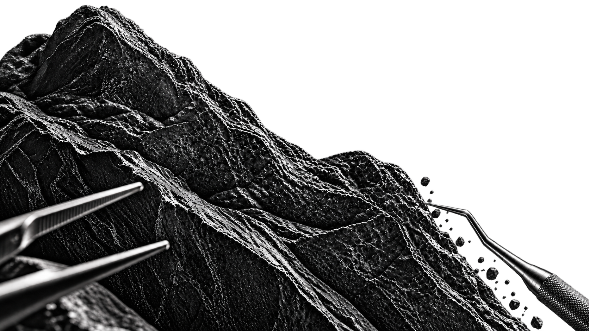
Как проходит лечение
Вы знаете план
до начала лечения
Листайте вниз — покажем четыре этапа лечения.
Листайте — каждый этап открывается отдельно.
Гималай Гезуев · основатель Denta City · хирург-имплантолог
Я и моя команда лечим зубы, исправляем прикус, устанавливаем импланты и восстанавливаем улыбку целиком. Берёмся и за сложные случаи.
Лечим без боли — с современной анестезией.
Записаться на бесплатную консультацию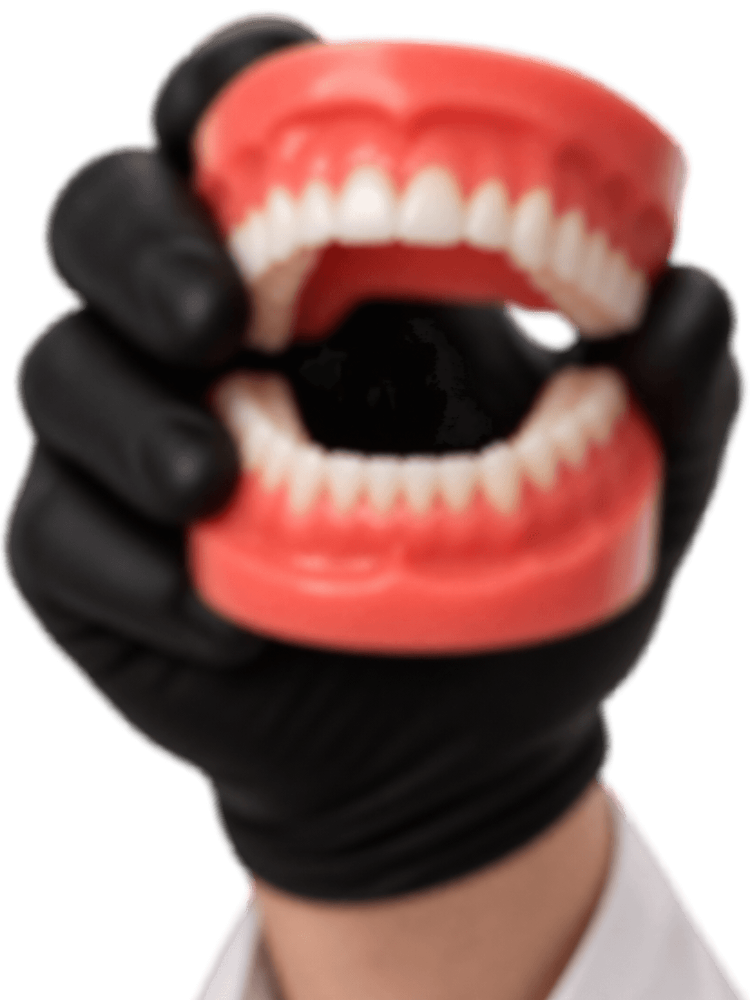
Все нужные специалисты работают по одному плану лечения.
Подход Гималая
Лечение в Denta City
Лечение зубов, ортодонтия, имплантация и протезирование — в моей клинике и по согласованному плану.
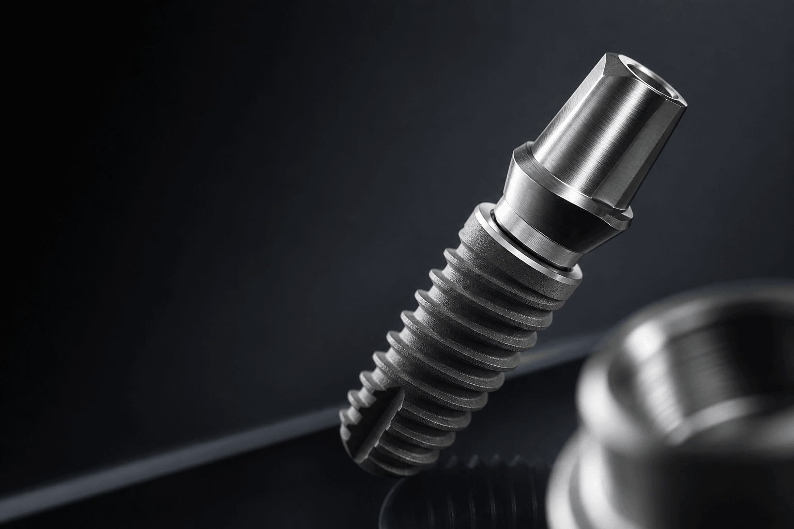
01Имплантация и костное наращиваниеВосстанавливаем отсутствующие зубы и при необходимости подготавливаем костную опору.↗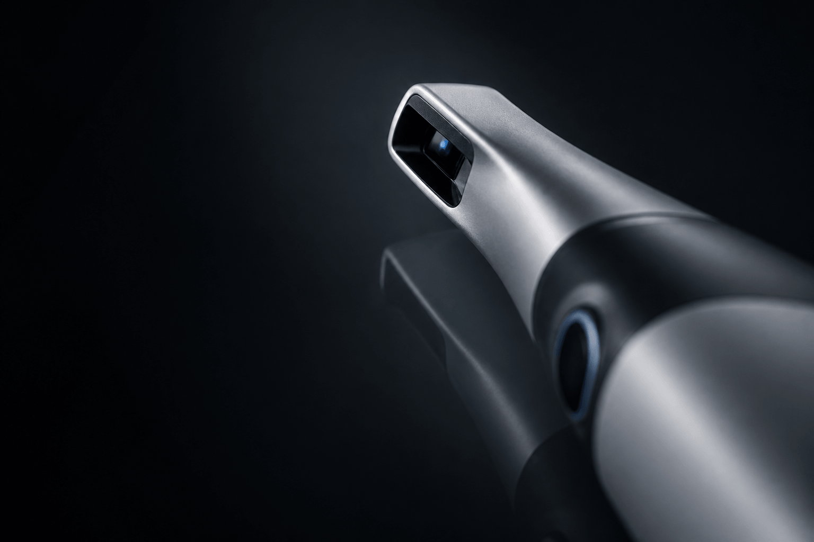
02Консультация и план леченияОсмотрим, изучим снимки и объясним возможные варианты лечения.↗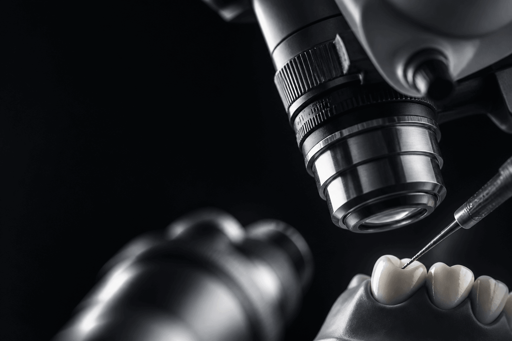
03Лечение и удаление зубовСохраняем зуб, когда это возможно. Если восстановить нельзя — планируем удаление и следующий этап.↗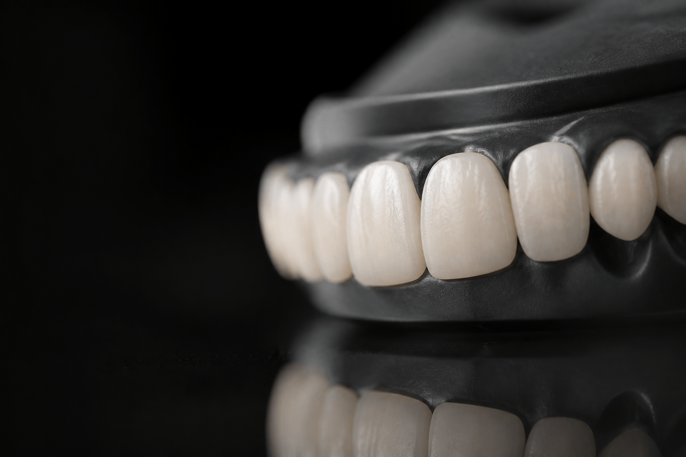
04ПротезированиеКоронки, виниры и комплексное восстановление зубного ряда.↗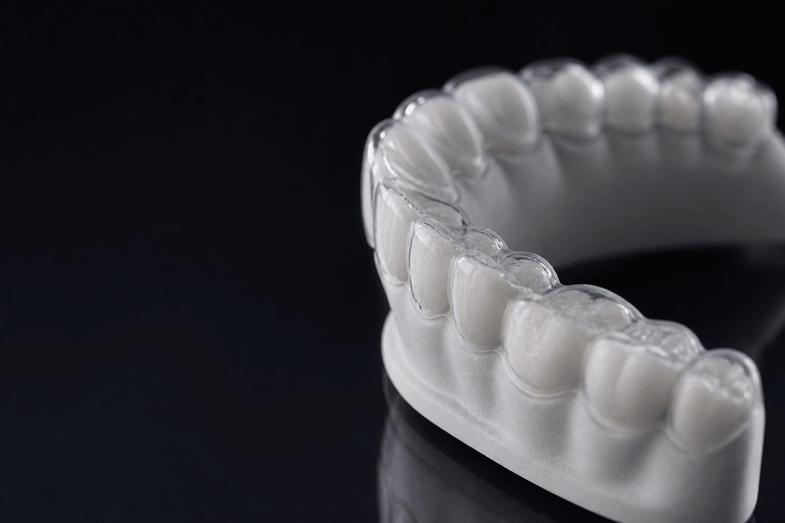
05Ортодонтическое лечениеИсправляем положение зубов и прикус с помощью брекетов и других методов.↗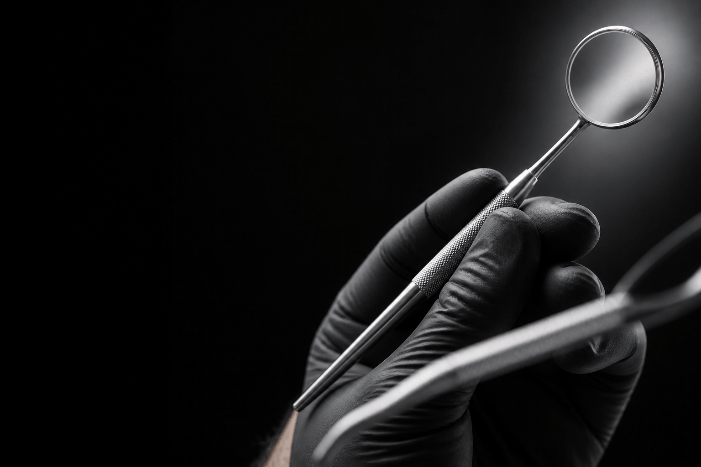
06Чистка и отбеливаниеУбираем налёт и подбираем подходящий способ осветления зубов.↗Не нашли нужную услугу? Выберите «Другое» при записи — администратор уточнит ваш вопрос.

Как проходит лечение
Листайте вниз — покажем четыре этапа лечения.
Листайте — каждый этап открывается отдельно.
Диагностика
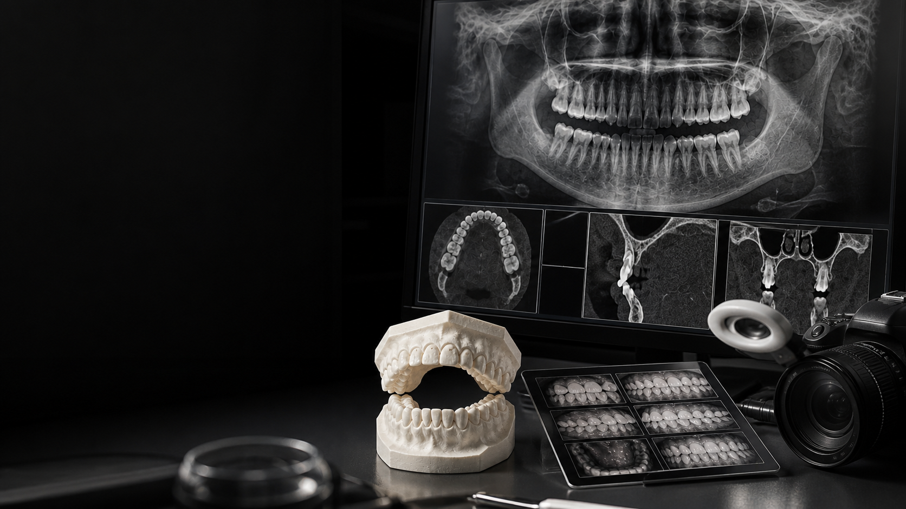
01 / 04Сначала понимаем проблему. Затем предлагаем лечение.План лечения
Лечение
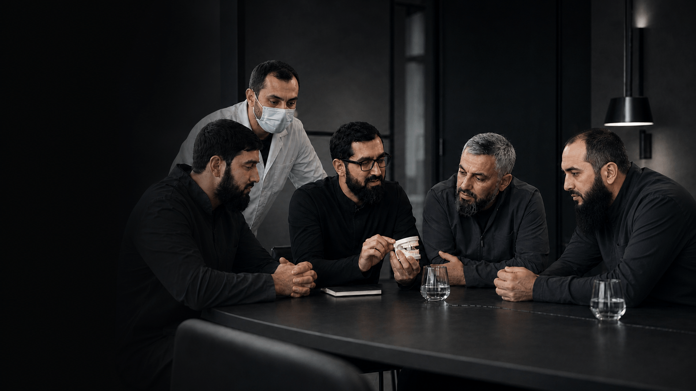
03 / 04Сначала действует анестезия.После лечения
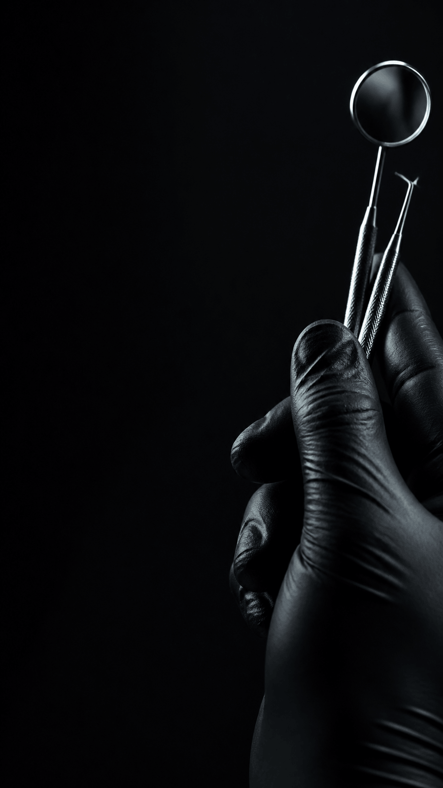
04 / 04Контроль помогает вовремя заметить изменения.Моя команда
Хирург, ортопед, ортодонт и терапевт работают по единому плану лечения. Сложные случаи разбираем вместе.
Профили врачей · выберите врача
Реальные работы Denta City
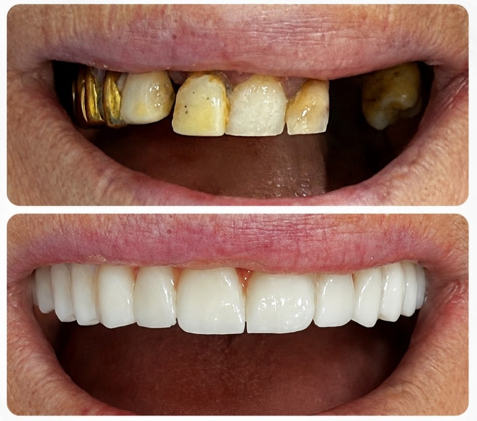
ДоПосле01 · История пациента
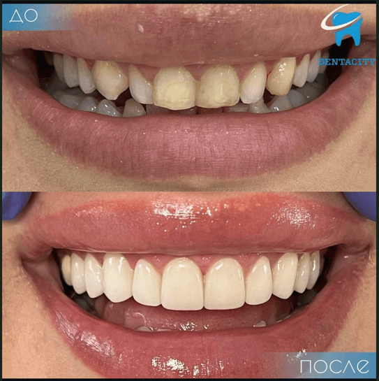
ДоПосле02 · Эстетическая ортопедия
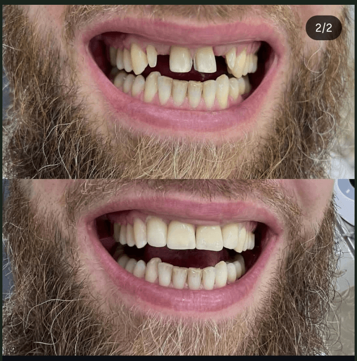
ДоПосле03 · Эстетическое восстановление
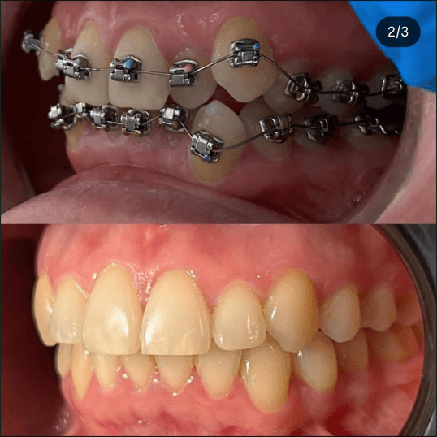
ДоПосле04 · Ортодонтия
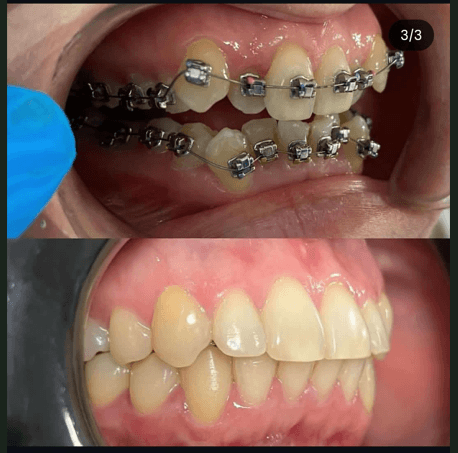
ДоПосле05 · Ортодонтия · деталь результата
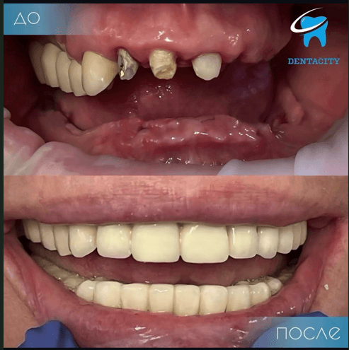
ДоПосле06 · Комплексная ортопедия
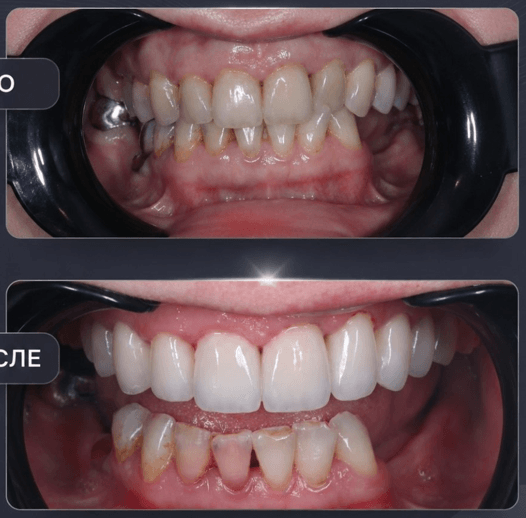
ДоПосле07 · Эстетическая ортопедия
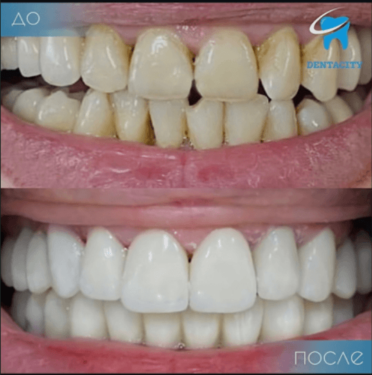
ДоПосле08 · Эстетическая гигиена
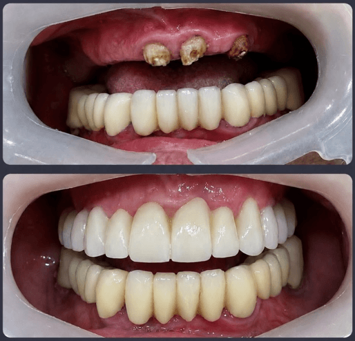
ДоПосле09 · Комплексная ортопедия
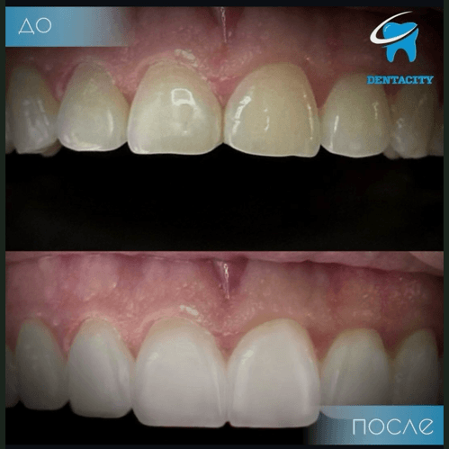
ДоПосле10 · Профессиональная гигиена
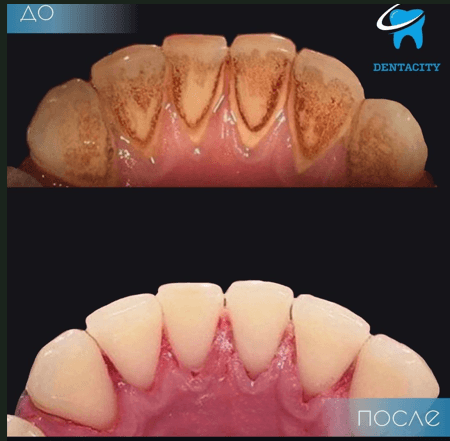
ДоПосле11 · Профессиональная гигиена
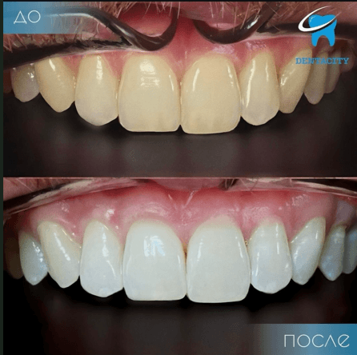
ДоПосле12 · Отбеливание
Что будет после консультации
Врач проведёт осмотр, изучит снимки и объяснит варианты. Точная стоимость зависит от состояния зубов и выбранного плана.
Разбираем жалобы, смотрим зубы и изучаем снимки.
Объясняем, что можно сделать и чем варианты отличаются.
После консультации называем этапы и стоимость выбранного лечения.
Исламская рассрочка HALAL TIME
Для оформления нужны постоянная прописка в Чеченской Республике и поручитель старше 25 лет из числа родственников.
Имплантация · сложные случаи
Выраженный дефицит кости, сахарный диабет и повышенный уровень сахара — ситуации, в которых особенно важны точная диагностика и опыт хирурга.
Записаться на бесплатную консультациюПосле диагностики Гималай подбирает понятный план лечения с учётом состояния и рисков.
Бесплатная консультация
Оставьте заявку. Администратор уточнит, что вас беспокоит, и запишет к подходящему врачу моей команды.
Если удобнее, напишите в WhatsApp или позвоните в клинику.